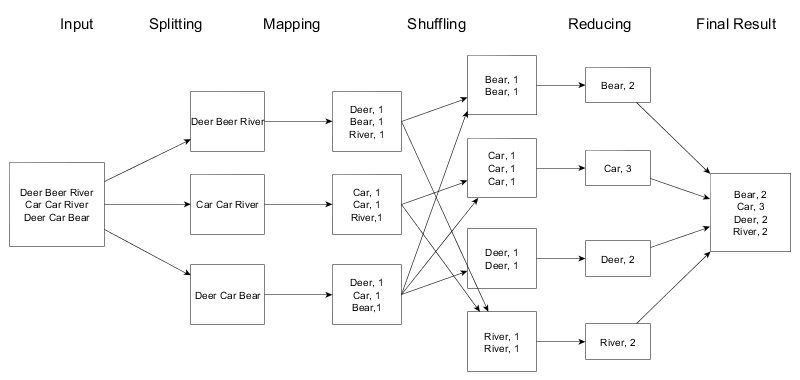

Map Reduce Data Flow Diagram

Mapper Code
import java.io.IOException;
import java.util.StringTokenizer;
import org.apache.hadoop.io.IntWritable;
import org.apache.hadoop.io.LongWritable;
import org.apache.hadoop.io.Text;
import org.apache.hadoop.mapred.MapReduceBase;
import org.apache.hadoop.mapred.Mapper;
import org.apache.hadoop.mapred.OutputCollector;
import org.apache.hadoop.mapred.Reporter;
public class WordCountMapper extends MapReduceBase implements Mapper<LongWritable, Text, Text, IntWritable> {
The mapper class (WordCountMapper) is static and extends MapReduceBase and implements Mapper.
private final IntWritable one = new IntWritable(1);
private Text word = new Text();
The variable one of IntWritable type is initialized to one. The variables one and word are the key/value pair respectively.
public void map(LongWritable key, Text value,
OutputCollector<Text, IntWritable> output, Reporter reporter) throws IOException {
The map method takes as parameters a LongWritable, which is the key, a text, which is the value and a OutputCollector which takes a Text and IntWritable output, then the reporter for status reporting. It throws a file exception if the file can't be acceeses for some reason.
String line = value.toString();
StringTokenizer itr = new StringTokenizer(line.toLowerCase());
The SringTokenizer class is a utility class in the MapReduceAPI that breaks down line into words. That's the defaut method fo tokenize lines. But Many times, in production context, this class will be extended or replaced.
while(itr.hasMoreTokens()) {
word.set(itr.nextToken());
output.collect(word, one);
}
}
}
While the tokenizer has still tokens, take the word and set the tokenizer to the next token. Then collect word and one in the output collector.
This code is runned on each of the physical nodes and takes chunks of text from the HDFS file system by default and break them into a set of key/value pairs (ie. word and one)
Reducer Code
import java.io.IOException;
import java.util.Iterator;
import org.apache.hadoop.io.IntWritable;
import org.apache.hadoop.io.Text;
import org.apache.hadoop.io.WritableComparable;
import org.apache.hadoop.mapred.MapReduceBase;
import org.apache.hadoop.mapred.OutputCollector;
import org.apache.hadoop.mapred.Reducer;
import org.apache.hadoop.mapred.Reporter;
public class WordCountReducer extends MapReduceBase implements Reducer<Text, IntWritable, Text, IntWritable> {
The Reduce class WordCountReducer extends MapReduceBase and implements a reducer.
public void reduce(Text key, Iterator<IntWritable> values,
OutputCollector<Text, IntWritable> output, Reporter reporter) throws IOException {
int sum = 0;
while (values.hasNext()) {
// replace ValueType with the real type of your value
IntWritable value = (IntWritable) values.next();
sum += value.get(); // process value
}
output.collect(key, new IntWritable(sum));
}
}
The reducer aggregates or counts up the number of word of each type. Then collect the key and sum in the output collector, producing smaller summary of word count.
All the values with the same key are presented to a single reducer together. The reducer receives a key and an iterator of input values from an input list, returning a single output value.
To resume:
mapper(filename, file-contents):
for each word in file-contents:
emit (word, 1)
reducer(word values):
sum = 0
for each value in values:
sum = sum + value
emit(word, sum)
Driver Code
The mapreduce code is runned by a main method, called the Driver. The driver initializes the job and instructs the Hadoop platform to execute the code on a set of input files, and controls where the output files are placed.
import org.apache.hadoop.fs.Path;
import org.apache.hadoop.io.IntWritable;
import org.apache.hadoop.io.Text;
import org.apache.hadoop.mapred.FileInputFormat;
import org.apache.hadoop.mapred.FileOutputFormat;
import org.apache.hadoop.mapred.JobClient;
import org.apache.hadoop.mapred.JobConf;
public class WordCount {
public static void main(String[] args) {
Create an instance of job configuration that parse the WordCount.class:
JobClient client = new JobClient();
JobConf conf = new JobConf(WordCount.class);
Specify output types:
conf.setOutputKeyClass(Text.class);
conf.setOutputValueClass(IntWritable.class);
Specify input and output directories:
FileInputFormat.addInputPath(conf, new Path("input"));
FileOutputFormat.setOutputPath(conf, new Path("output"));
Specify a mapper:
conf.setMapperClass(WordCountMapper.class);
Specify a reducer:
conf.setReducerClass(WordCountReducer.class);
conf.setCombinerClass(WordCountReducer.class);
client.setConf(conf);
Run the Job by submitting the job to Mapreduce:
try {
JobClient.runJob(conf);
} catch (Exception e) {
e.printStackTrace();
}
}
}
High level MapReduce Pipeline

In details:

The read and split up of input files are defined by the InputFormat which performs the following tasks:
- Selects the files or other objects that should be used for input
- Defines the InputSplits that break a file into tasks
- Provides a factory for RecordReader objects that read the file
Standard InputFormat are :
| InputFormat | Description | Key | Value |
|---|---|---|---|
| TextInputFormat | Default format; reads lines of text files |
The byte offset of the line | The line contents |
| KeyValueInputFormat | Parses lines into key, val pair |
Everything up to the first tab character | The remainder of the line |
| SequenceFileInputFormat | A Hadoop-specific high-performance binary format | user-defined | user-defined |
The InputSplit describes a unit of work that comprises a single map task in a MapReduce program.
By processing a file in chunks, several map tasks can operate on a single file in parallel. Since the various blocks that make up the file may be spread across several different nodes in the cluster, tasks can be scheduled on each of these different node.
The RecordReader class loads the data from its source and converts it into (key, value) pairs suitable for reading by the Mapper. The key associated with each line is its byte offset in the file. The RecordReader is invoke repeatedly on the input until the entire InputSplit has been consumed.
After the mapping process, the (intermediate) outputs are moved to the reducers (shuffling). A different subset of the intermediate key space is assigned to each reduce node; these subsets (known as "partitions") are the inputs to the reduce tasks. The map nodes must all agree on where to send the different pieces of the intermediate data. The Partitioner class determines which partition a given (key, value) pair will go to.
Each reduce task is responsible for reducing the values associated with several intermediate keys. The set of intermediate keys on a single node is automatically sorted by Hadoop before they are presented to the Reducer.
After the reducing process the (key, value) pairs provided to this OutputCollector are then written to output files.
iThe instances of OutputFormat provided by Hadoop write to files on the local disk or in HDFS; they all inherit from a common FileOutputFormat. Each Reducer writes a separate file in a common output directory (usually named part-nnn).
Standard OutputFormat are:
| OutputFormat | Description |
|---|---|
| TextOutputFormat | Default; writes lines in "key \t value" form |
| SequenceFileOutputFormat | Writes binary files suitable for reading into subsequent MapReduce jobs |
| NullOutputFormat | Disregards its inputs |
RecordWriters are used to write the individual records to the files as directed by the OutputFormat.